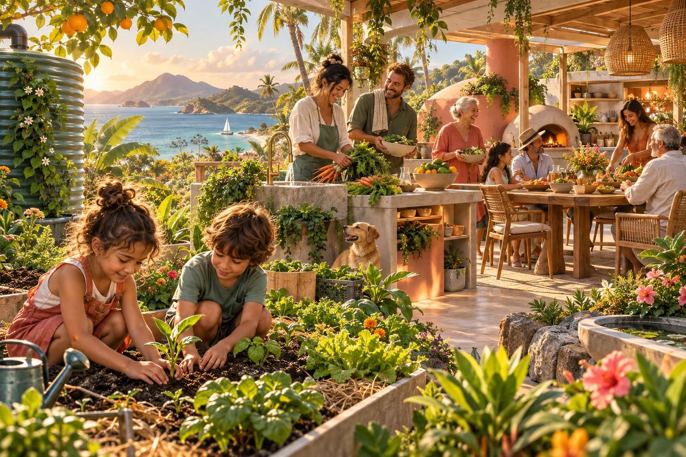
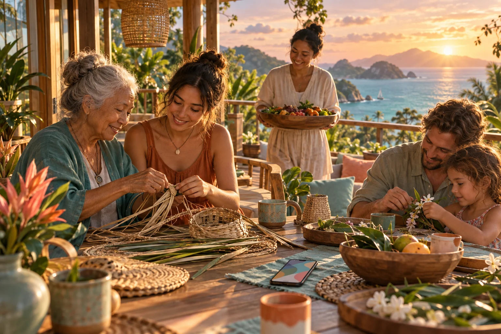

01 / Follow your curiosity
More possible lives
Try different work, learn when you need to, and make room for care, rest, travel and new chapters.

Explore a future where everyday care, curiosity and community contribution help more people live well. Choose something you enjoy. See where it leads.
A C-hour recognises one verified hour of time freely given.
Communities choose their own recognition, rewards and reciprocity.
Care, learning, creativity and shared capability. The hour has no monetary equivalent.
Start with an interest, something you already contribute, or a little help that would make your day easier.

Grow something. Share a meal. Pass on a skill. Explore how a simple gathering can grow into shared capability.

Try a new craft, fix something useful or explore AI with a friendly guide. Your next adventure can begin with curiosity.

The support we give family, friends and neighbours already matters. Discover recognition that fits around real life.
Looking after someone. Teaching a skill. Bringing people together. Much of what makes life work never appears in a financial account.
The Community-Hour makes voluntary human contribution visible. One verified hour is one C-hour, with the story of what happened alongside it.
Money, human contribution and real outcomes each have their own records. This helps people appreciate the work and understand what it made possible.
How Community Hours workA life worth enjoying, care for our effects on others, and useful capacity that more people can share.
Try different work, learn when you need to, and make room for care, rest, travel and new chapters.
Connect practical projects, shared knowledge and tools that people can understand, shape and maintain.
Explore personal agents that help with everyday life while leaving you in charge of observation, memory and sharing.
Imagine asking a personal agent about something you would enjoy, a contribution you already make, or a skill you want to try.
The proposed Sensorium connects these conversations with phones, optional wearables, local computing and living models of places. You choose what stays private and what you share.
Explore the SensoriumBeginning with relationships on Minjerribah, the proposal connects food, stories, personal intelligence and shared enterprise across Australia and Oceania.
Explore shared ownership, Universal Intelligence and more room for learning, care and rest.
A flexible starting sketch for hosts, households, visitors and builders to shape together.
Follow purposeful connections into Straddie food, media, learning, twins and community tools.
This invitation begins with Luke Nathan Hayes, Aura of Intelligence and the GAJRA Earth concept. It has room to change through the people who join the conversation.
The plan, source archive and related public projects are here to explore at your own pace.